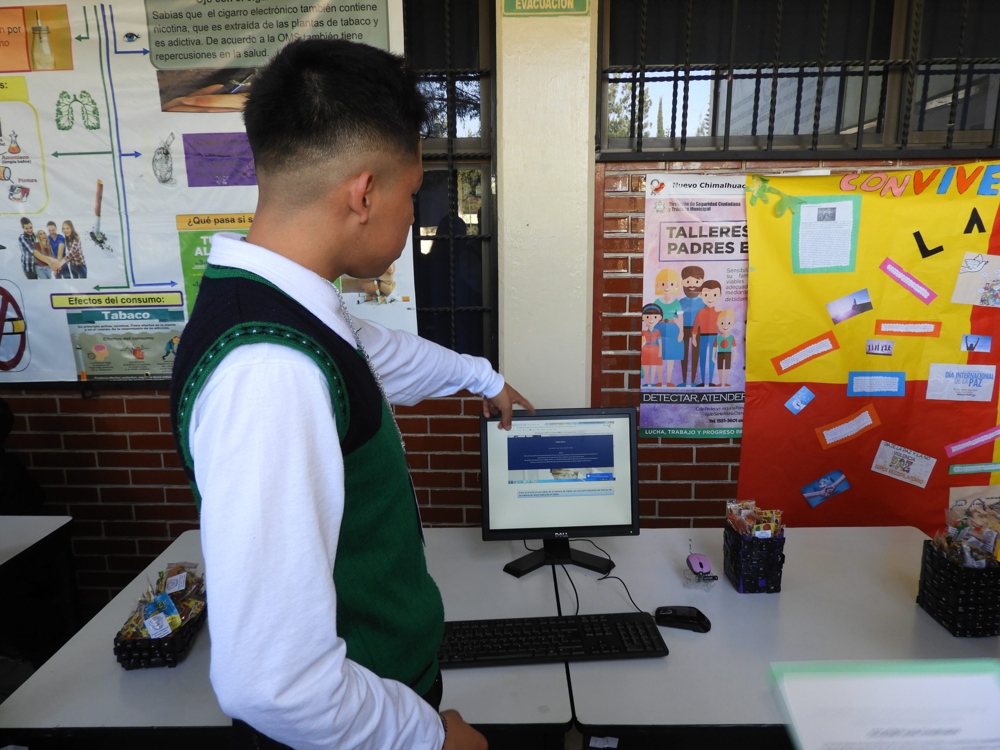
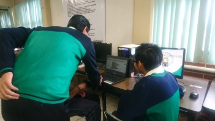
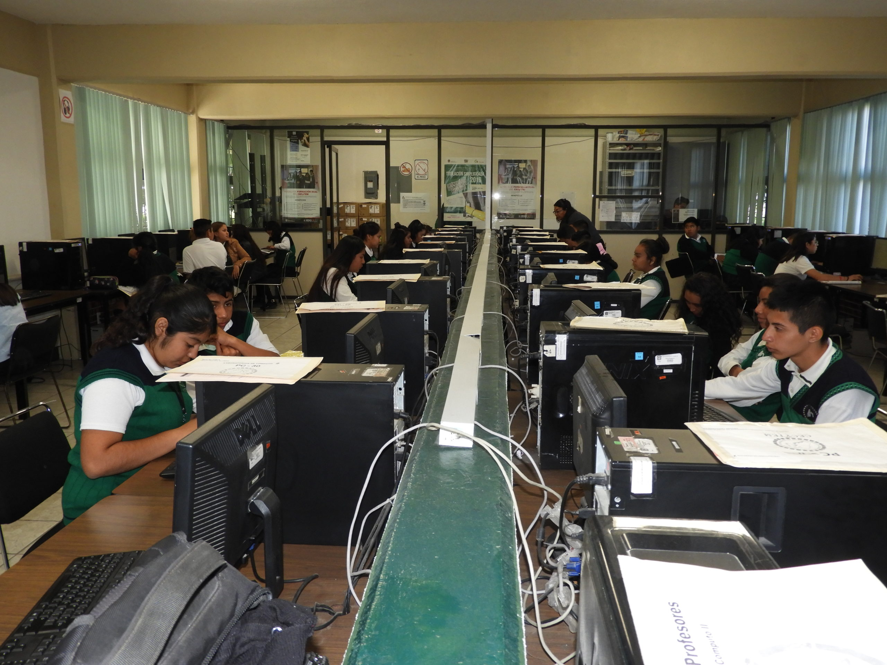

Técnico en Programador
El Técnico en Programador en el CECyTE de México Plantel La Paz es un programa académico diseñado para formar profesionales capaces de desarrollar software de calidad y soluciones tecnológicas innovadoras en diversas áreas de trabajo. Los estudiantes adquirirán conocimientos en lenguajes de programación, bases de datos, diseño de interfaces y programación orientada a objetos.
La carrera está enfocada en el desarrollo de aplicaciones móviles, software de escritorio, sistemas web y comercio electrónico, lo que permite a los egresados trabajar en diversas empresas del sector tecnológico o como freelance. Además, el programa académico incluye materias relacionadas con el emprendimiento y la gestión de proyectos, lo que les brinda a los estudiantes habilidades y herramientas para iniciar su propia empresa o proyecto en el área de la tecnología.
Este programa es ideal para quienes están interesados en la tecnología y la programación. Los egresados tendrán habilidades para resolver problemas, analizar y diseñar sistemas informáticos, y adaptarse a tecnologías emergentes.
Perfil de Ingreso

El perfil de ingreso de este programa requiere a personas con habilidades numéricas y analíticas, así como con interés por la programación y la informática. Es fundamental que los estudiantes tengan capacidad para trabajar en equipo y resolver problemas de manera creativa.
Perfil de Egreso

Los egresados estarán capacitados en la creación, desarrollo y mantenimiento de aplicaciones y software. Los egresados desarrollan habilidades para identificar los desafíos que presenta un proyecto de software y diseñar soluciones efectivas y escalables para abordarlos.
Habilidades a Desarrollar

Los estudiantes desarrollarán habilidades esenciales en lenguajes de programación, comprensión de algoritmos y desarrollo de aplicaciones web y móviles. El programa enfatiza la importancia de la calidad y seguridad en el código y el desarrollo de software.
Campo Laboral

El campo laboral para los Técnicos en Programador es amplio y en constante crecimiento, con oportunidades en diversas industrias. Los egresados pueden desempeñar roles como desarrolladores de software, analistas de sistemas, consultores tecnológicos y gestores de proyectos de TI.